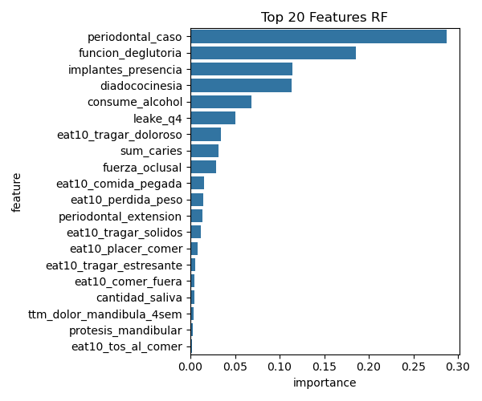

Visualizaciones y Análisis por Modelo
Random Forest
Matriz de Confusión - Random Forest
Esta matriz muestra la excelente capacidad de RF para minimizar falsos negativos en hipofunción, ideal para screening clínico preventivo.
Importancia de Features - Random Forest
El gráfico confirma que las variables periodontales y de función oral dominan las predicciones del modelo RF.
Análisis SHAP - Random Forest

El análisis SHAP revela que periodontal_grado domina las predicciones, seguido por fuerza_oclusal. Los valores rojos (altos) impulsan hacia hipofunción.
XGBoost
Matriz de Confusión - XGBoost

XGBoost muestra un balance sólido entre precisión y recall, capturando patrones no-lineales complejos en los datos.
Importancia de Features - XGBoost
El gradient boosting de XGBoost identifica sutiles interacciones entre variables que otros modelos podrían pasar por alto.
Análisis SHAP - XGBoost
SHAP para XGBoost revela cómo el modelo pondera cada característica, crucial para la interpretabilidad clínica.
Support Vector Machine
Matriz de Confusión - SVM
Esta matriz demuestra la capacidad de SVM como "guardian de fronteras" para casos periodontales borderline, minimizando falsos negativos.
Importancia de Features - SVM
La importancia por permutación en SVM destaca las variables más críticas para la separación entre clases funcionales.